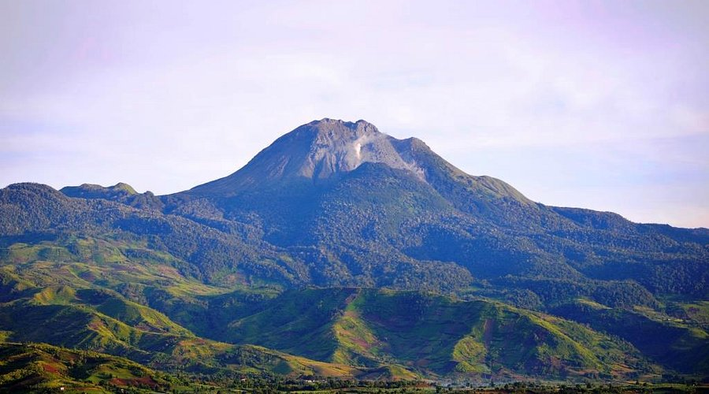

Mount Apo
The country's highest peak, popular for trekking, camping, and sunrise views.
- Entrance: Guide and permit fees vary by trail
- Hours: By permit and scheduled climb
Mount Apo is the highest mountain in the Philippines and one of Mindanao's most iconic adventure destinations. Climbers visit for mossy forests, boulder trails, volcanic landscapes, and sweeping views from the summit.
Santa Cruz / Digos City
Trekking, camping, birdwatching, landscape photography
Dry season, especially February to May
Guide and permit fees vary by trail
By permit and scheduled climb
Book an accredited guide, prepare physically, pack warm layers, and follow leave-no-trace rules.